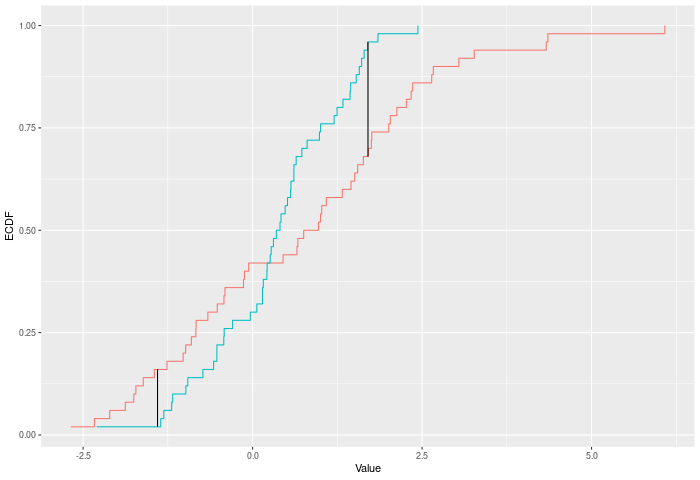

| kuiper_test {twosamples} | R Documentation |
A two-sample test based on the Kuiper test statistic (kuiper_stat).
kuiper_test( a, b, nboots = 2000, p = default.p, keep.boots = T, keep.samples = F ) kuiper_stat(a, b, power = def_power)
a |
a vector of numbers (or factors – see details) |
b |
a vector of numbers |
nboots |
Number of bootstrap iterations |
p |
power to raise test stat to |
keep.boots |
Should the bootstrap values be saved in the output? |
keep.samples |
Should the samples be saved in the output? |
power |
power to raise test stat to |
The Kuiper test compares two ECDFs by looking at the maximum positive and negative difference between them. Formally – if E is the ECDF of sample 1 and F is the ECDF of sample 2, then
KUIPER = |max_x E(x)-F(x)|^p + |max_x F(x)-E(x)|^p
. The test p-value is calculated by randomly resampling two samples of the same size using the combined sample.
In the example plot below, the Kuiper statistic is the sum of the heights of the vertical black lines.

Inputs a and b can also be vectors of ordered (or unordered) factors, so long as both have the same levels and orderings. When possible, ordering factors will substantially increase power.
Output is a length 2 Vector with test stat and p-value in that order. That vector has 3 attributes – the sample sizes of each sample, and the number of bootstraps performed for the pvalue.
kuiper_test(): Permutation based two sample Kuiper test
kuiper_stat(): Permutation based two sample Kuiper test
dts_test() for a more powerful test statistic. See ks_test() for the predecessor to this test statistic, and cvm_test() for its natural successor.
set.seed(314159) vec1 = rnorm(20) vec2 = rnorm(20,0.5) out = kuiper_test(vec1,vec2) out summary(out) plot(out) # Example using ordered factors vec1 = factor(LETTERS[1:5],levels = LETTERS,ordered = TRUE) vec2 = factor(LETTERS[c(1,2,2,2,4)],levels = LETTERS, ordered=TRUE) kuiper_test(vec1,vec2)